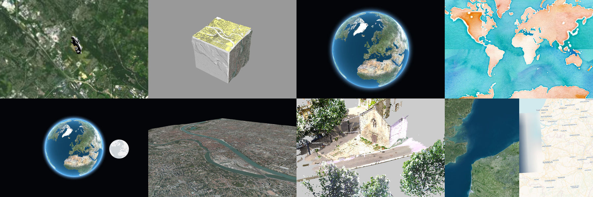

What is it?
iTowns is a web framework written in Javascript/WebGL for the visualisation of 3D geographic data and precise 3D measurements.
iTowns is highly extensible and based on three.js and thus support all three.js features (post-processing, controls, 3D models and more).
Itowns handles a variety of data types, including:
- 3D tiles
- DEM
- OGC standards (WMTS, WMS, TMS, WFS)
- Point Clouds
- GeoJSON, GPX, KML
- 3D formats (Collada, GLTF, OBJ, ...)
Examples:
Support
iTowns is currently maintained by IGN and Oslandia
You may consult the user and developper mailing lists.
Acknowledgement
iTowns is an original work of the IGN, MATIS research laboratory. It has been funded through various research programs involving the French National Research Agency, Cap Digital, UPMC, Mines ParisTec, CNRS, LCPC.